Stacking Ensemble Machine Learning
Contents
Stacking Ensemble Machine Learning#
Import Libraries#
# Import libraries for data manipulation
import pandas as pd
import numpy as np
# Import libraries for plotting the graphs
import seaborn as sns
import matplotlib.pyplot as plt
from statannotations.Annotator import Annotator
# Set theme
sns.set_theme(style='white')
Load Datasets#
x_train = pd.read_pickle('../Data/x_train.pkl')
y_train = pd.read_pickle('../Data/y_train.pkl')
x_test = pd.read_pickle('../Data/x_test.pkl')
y_test = pd.read_pickle('../Data/y_test.pkl')
merge = pd.concat([x_train,x_test], axis=0, join='inner')
kasumi = pd.read_pickle('../Data/deci_flongle_runs.pkl')
labels = pd.read_excel('../Data/Combined_Datasets/labelsCOG_WHOClass.xlsx', index_col=0)
labels2 = labels[labels.index.isin(list(y_train.index))]
PCA#
from sklearn.decomposition import PCA
# Fit PCA
pca_decomp = PCA(random_state=42, n_components=2)
data_PCs = pca_decomp.fit_transform(x_train)
def draw_scatterplot(score, hue=None):
sns.set_theme(style="white", color_codes=True)
# Define variables
score2 = score[:,0:2]
xs = score2[:,0]
ys = score2[:,1]
scalex = 1.0/(xs.max() - xs.min())
scaley = 1.0/(ys.max() - ys.min())
# Define scatterplot
sns.scatterplot(x=xs * scalex, y=ys * scaley,
palette='husl', s=10,
linewidth=0, alpha=1,
data=y_train, hue=hue)
# Define plot specs
plt.title("PCA Decomposition by, n= "+ str(len(score2)),
fontsize = 12)
plt.xlabel("PC 1")
plt.ylabel("PC 2")
plt.tight_layout()
# Put the legend out of the figure
plt.legend(bbox_to_anchor=(1.05, 1), loc=2, borderaxespad=0.)
# Save figure
# if(hue):
# plt.savefig('../Plots/PCA_by_' + hue + '.png',
# bbox_inches='tight', dpi=300)
# else:
# plt.savefig('../Plots/PCA.png',
# bbox_inches='tight', dpi=300)
return(plt.show())
draw_scatterplot(data_PCs)
No artists with labels found to put in legend. Note that artists whose label start with an underscore are ignored when legend() is called with no argument.
draw_scatterplot(data_PCs, hue="Clinical Trial")
draw_scatterplot(data_PCs, hue="Batch")
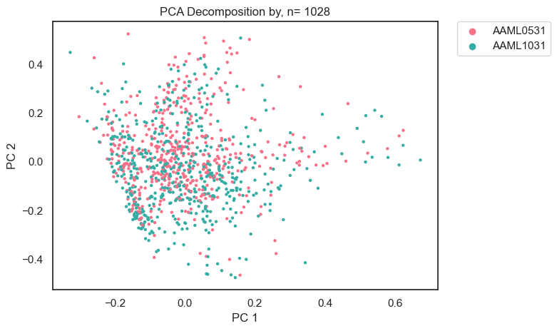
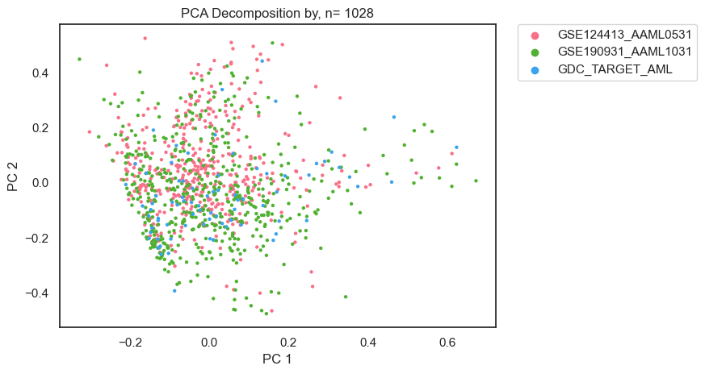
Feature Extraction#
PacMap#
import pacmap
reducer = pacmap.PaCMAP(n_components=2, n_neighbors=15,
MN_ratio=0.5, FP_ratio=10.0,random_state=42,
lr=0.1, num_iters=4500, verbose=False)
# Fit the training set
embedding = reducer.fit_transform(x_train)
c:\ProgramData\mambaforge\lib\site-packages\pacmap\pacmap.py:774: UserWarning: Warning: random state is set to 42
warnings.warn(f'Warning: random state is set to {_RANDOM_STATE}')
Data Visualization#
y_train['Methyl Class'] = labels2[labels2['WHO Classification'].isin(['KMT2A-rearrangement',
'Other or Undefined',
't(8;21)(q22;q22); RUNX1::RUNX1T1',
'inv(16)(p13.1q22) or t(16;16)(p13.1;q22); CBFB::MYH11',
'NUP98-fusion',
'Cytogenetically Normal',
'mutated CEBPA'])]['WHO Classification']
y_train['Methyl Class'] = y_train['Methyl Class'].fillna('Other or Undefined')
def draw_PacMAP(score,hue=None, labels=y_train):
sns.set_theme(style="white", color_codes=True)
# Define variables
score2 = score[:,0:2]
xs = score2[:,0]
ys = score2[:,1]
# Define scatterplot
plt.subplots(figsize=(7, 5))
sns.scatterplot(data=labels, x=xs, y=ys,
s=10,hue=hue,
linewidth=0, alpha=0.8)
plt.xlabel("PacMAP 1")
plt.ylabel("PacMAP 2")
plt.tight_layout()
plt.xlim(-40,40)
plt.ylim(-50,50)
plt.grid(True)
# Put the legend out of the figure
plt.legend(bbox_to_anchor=(1.05, 1), loc=2, borderaxespad=0.)
# Define plot specs
if hue != None:
plt.title("PacMAP by " + hue + ", n= "+ str(len(score2)),
fontsize = 12)
plt.savefig('../Figures/PacMAP/' + hue + '.png',
bbox_inches='tight', dpi=300)
else:
plt.title("PacMAP Projection, n= "+ str(len(score2)),
fontsize = 12)
plt.savefig('../Figures/PacMAP/PacMAP_Projection.png',
bbox_inches='tight', dpi=300)
return(plt.show())
y_train.columns.to_list()
['Patient_ID',
'TARGET USI',
'Sex',
'Race or ethnic group',
'Hispanic or Latinx ethnic group',
'Age at Diagnosis in Days',
'First Event',
'Event Free Survival Time in Days',
'Vital Status',
'Overall Survival Time in Days',
'Year of Diagnosis',
'Year of Last Follow Up',
'Clinical Trial',
'WBC Count (G/L)',
'BM Leukemic blasts (%)',
'Peripheral blasts (%)',
'CNS disease',
'Chloroma',
'FAB Category',
't(6;9)',
't(8;21)',
't(3;5)(q25;q34)',
't(6;11)(q27;q23)',
't(9;11)(p22;q23)',
't(10;11)(p11.2;q23)',
't(11:19)(q23:p13.1)',
'inv(16)',
'del5q',
'del7q',
'del9q',
'monosomy 5',
'monosomy 7',
'trisomy 8',
'trisomy 21',
'MLL',
'Minus Y',
'Minus X',
'Cytogenetic Code Other',
'Cytogenetic Complexity',
'Primary Cytogenetic Code',
'ISCN',
'FLT3 ITD',
'FLT3/ITD allelic ratio',
'FLT3 PM',
'NPM mutation',
'CEBPA mutation',
'WT1 mutation',
'c-Kit Mutation Exon 8',
'c-Kit Mutation Exon 17',
'MRD at end of course 1',
'MRD % at end of course 1',
'MRD at end of course 2',
'MRD % at end of course 2',
'CR status at end of course 1',
'CR status at end of course 2',
'Risk group',
'SCT in 1st CR',
'Bone Marrow Site of Relapse/Induction Failure',
'CNS Site of Relapse/Induction Failure',
'Chloroma Site of Relapse/Induction Failure',
'Cytogenetic Site of Relapse/Induction Failure',
'Other Site of Relapse/Induction Failure',
'Gene Fusion',
'Treatment Arm',
'Refractory Timepoint sent for Induction Failure Project',
'Comment',
'GSM_ID',
'Gemtuzumab ozogamicin treatment',
'Sample Type',
'KRAS',
'Protocol risk group classification',
'Sample ID',
'Sample_Name',
'Batch',
'Risk Group',
'Karyotype Complexity 3',
'Karyotype Complexity 4',
'Karyotype Complexity 6',
'Age (years)',
'efs.time',
'os.time',
'os.evnt',
'efs.evnt',
'treat.arm',
'relapse.evnt',
'rel_indfail.evnt',
'MRD 1 Status',
'Age group (years)',
'Leucocyte counts (10⁹/L)',
'Methyl Class']
draw_PacMAP(embedding, hue= 'Year of Diagnosis')

draw_PacMAP(embedding, hue= 'Karyotype Complexity 3')
draw_PacMAP(embedding, hue= 'FLT3 ITD')
draw_PacMAP(embedding, hue= 'FAB Category')
draw_PacMAP(embedding, hue= 'MRD 1 Status')
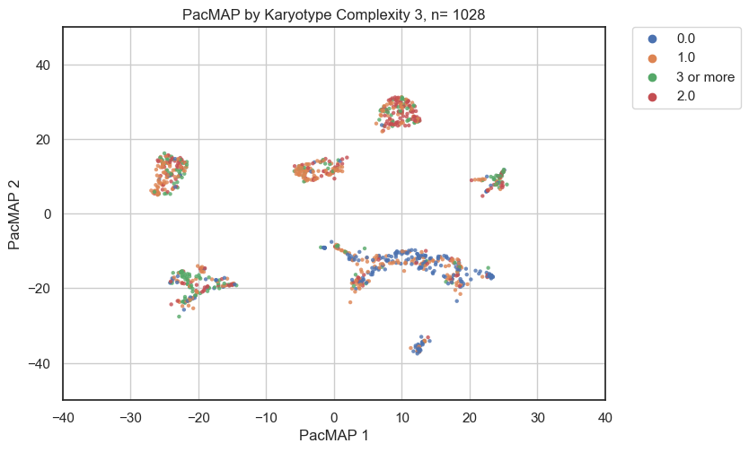
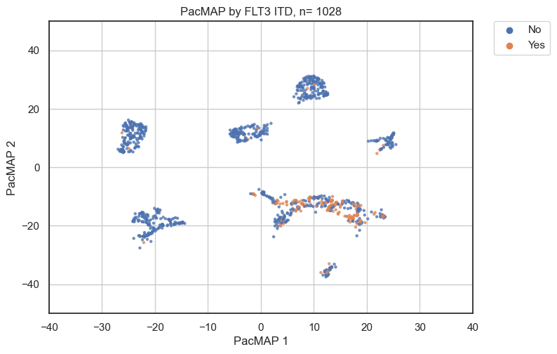
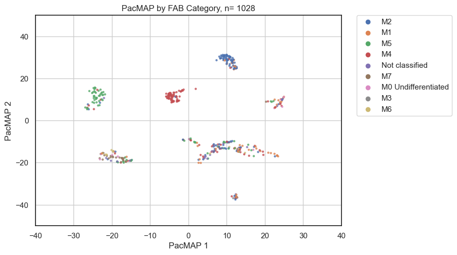

draw_PacMAP(embedding, hue= 'Methyl Class')
draw_PacMAP(embedding, hue= 'WHO Classification', labels=labels2)
draw_PacMAP(embedding, hue= 'Risk Group')
draw_PacMAP(embedding, hue= 'First Event')
draw_PacMAP(embedding, hue= 'Vital Status')
draw_PacMAP(embedding, hue= 'Age (years)')
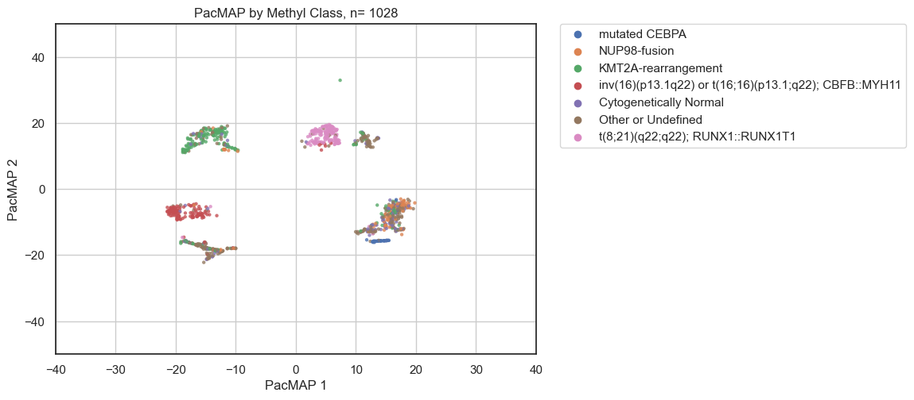
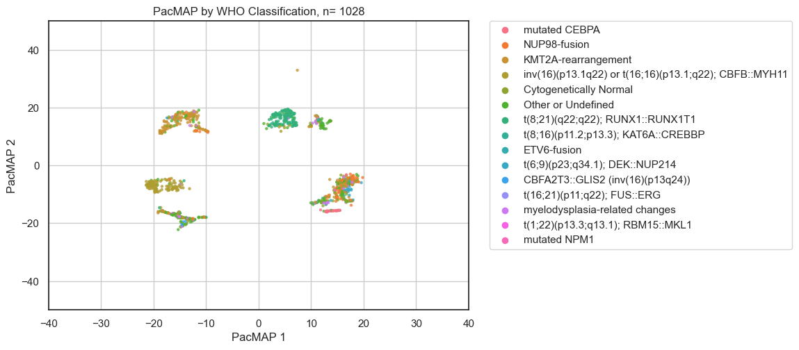
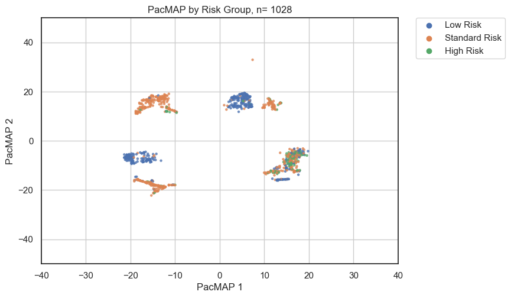
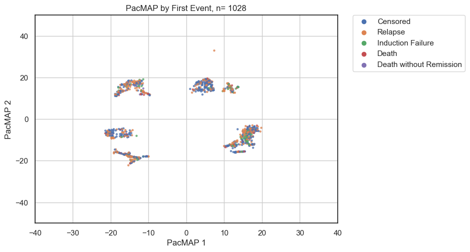
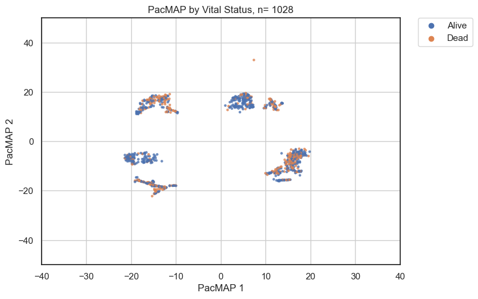
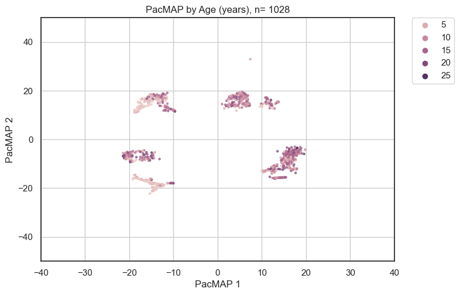
draw_PacMAP(embedding, hue= 'Methyl Class')
draw_PacMAP(embedding, hue= 'WHO Classification', labels=labels2)
draw_PacMAP(embedding, hue= 'Risk Group')
draw_PacMAP(embedding, hue= 'First Event')
draw_PacMAP(embedding, hue= 'Vital Status')
draw_PacMAP(embedding, hue= 'Age (years)')
Set Controls#
neg_control = pd.DataFrame(data=np.zeros(x_train.shape[1]),index=x_train.columns, columns=['All Unmethylated']).T
pos_control = pd.DataFrame(data=np.ones(x_train.shape[1]),index=x_train.columns, columns=['All Methylated']).T
neutral_control = pd.DataFrame(data=np.full(shape=x_train.shape[1],fill_value=0.5,dtype=float),index=x_train.columns,columns=['All half-methylated']).T
controls = pd.concat([neg_control,pos_control,neutral_control])
# Transform the test set into the same embedding space
embedding_test = reducer.transform(controls, basis=x_train.copy())
draw_PacMAP(embedding_test, labels=None, hue=controls.index)
---------------------------------------------------------------------------
ValueError Traceback (most recent call last)
c:\Users\flourenco\Desktop\Methylation Project\Code\4_PacMAP_Nanopore.ipynb Cell 26 in <cell line: 1>()
----> <a href='vscode-notebook-cell:/c%3A/Users/flourenco/Desktop/Methylation%20Project/Code/4_PacMAP_Nanopore.ipynb#X45sZmlsZQ%3D%3D?line=0'>1</a> draw_PacMAP(embedding_test, labels=None, hue=controls.index)
c:\Users\flourenco\Desktop\Methylation Project\Code\4_PacMAP_Nanopore.ipynb Cell 26 in draw_PacMAP(score, hue, labels)
<a href='vscode-notebook-cell:/c%3A/Users/flourenco/Desktop/Methylation%20Project/Code/4_PacMAP_Nanopore.ipynb#X45sZmlsZQ%3D%3D?line=23'>24</a> plt.legend(bbox_to_anchor=(1.05, 1), loc=2, borderaxespad=0.)
<a href='vscode-notebook-cell:/c%3A/Users/flourenco/Desktop/Methylation%20Project/Code/4_PacMAP_Nanopore.ipynb#X45sZmlsZQ%3D%3D?line=24'>25</a> # Define plot specs
---> <a href='vscode-notebook-cell:/c%3A/Users/flourenco/Desktop/Methylation%20Project/Code/4_PacMAP_Nanopore.ipynb#X45sZmlsZQ%3D%3D?line=26'>27</a> if hue != None:
<a href='vscode-notebook-cell:/c%3A/Users/flourenco/Desktop/Methylation%20Project/Code/4_PacMAP_Nanopore.ipynb#X45sZmlsZQ%3D%3D?line=27'>28</a> plt.title("PacMAP by " + hue + ", n= "+ str(len(score2)),
<a href='vscode-notebook-cell:/c%3A/Users/flourenco/Desktop/Methylation%20Project/Code/4_PacMAP_Nanopore.ipynb#X45sZmlsZQ%3D%3D?line=28'>29</a> fontsize = 12)
<a href='vscode-notebook-cell:/c%3A/Users/flourenco/Desktop/Methylation%20Project/Code/4_PacMAP_Nanopore.ipynb#X45sZmlsZQ%3D%3D?line=29'>30</a> plt.savefig('../Figures/PacMAP/' + hue + '.png',
<a href='vscode-notebook-cell:/c%3A/Users/flourenco/Desktop/Methylation%20Project/Code/4_PacMAP_Nanopore.ipynb#X45sZmlsZQ%3D%3D?line=30'>31</a> bbox_inches='tight', dpi=300)
ValueError: The truth value of an array with more than one element is ambiguous. Use a.any() or a.all()
Define St Jude Test#
x_test2 = x_test.T.join(x_train.columns.to_frame(name='index'),how='right').set_index('index').T
embedding_test2 = reducer.transform(x_test2.fillna(0.5), basis=x_train.copy())
draw_PacMAP(embedding_test2, labels=None)
No artists with labels found to put in legend. Note that artists whose label start with an underscore are ignored when legend() is called with no argument.
Define Nanopore Samples#
kasumi2 = kasumi.join(x_train.columns.to_frame(name='index'),how='right').set_index('index').T
reducer = pacmap.PaCMAP(n_components=2, n_neighbors=15,
MN_ratio=0.5, FP_ratio=10.0,random_state=42,
lr=0.1, num_iters=4500, verbose=False)
# Fit the training set
embedding2 = reducer.fit_transform(x_train[kasumi2.T['Deci0-MinION'].dropna().index])
c:\ProgramData\mambaforge\lib\site-packages\pacmap\pacmap.py:774: UserWarning: Warning: random state is set to 42
warnings.warn(f'Warning: random state is set to {_RANDOM_STATE}')
draw_PacMAP(embedding, hue= 'Methyl Class')
draw_PacMAP(embedding2, hue= 'Methyl Class')
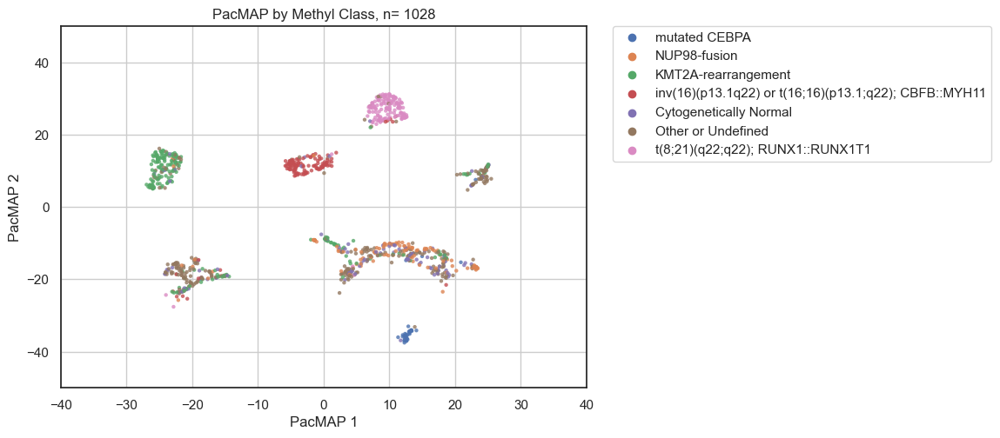
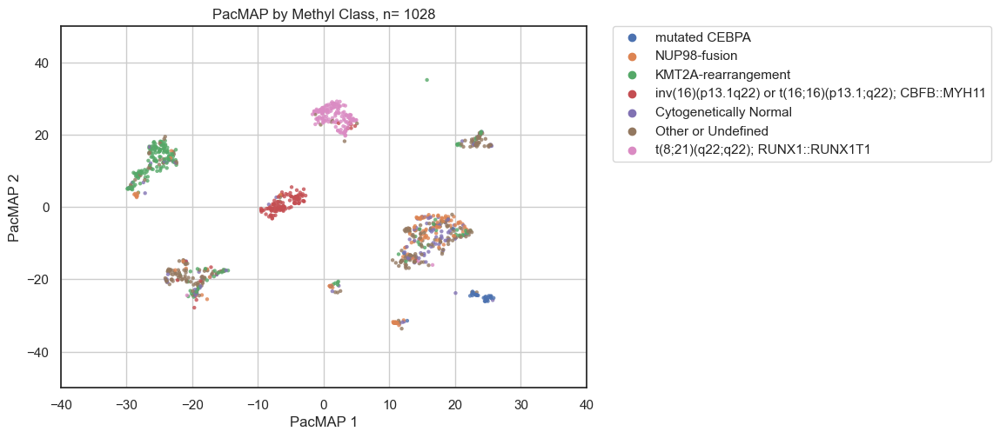
embedding2_test2 = reducer.transform(kasumi2.T['Deci0-MinION'].dropna().to_frame().T, basis=x_train[kasumi2.T['Deci0-MinION'].dropna().index].copy())
draw_PacMAP(embedding2_test2,labels=None)
No artists with labels found to put in legend. Note that artists whose label start with an underscore are ignored when legend() is called with no argument.
def draw_PacMAP(score,hue=None, labels=y_train):
sns.set_theme(style="white", color_codes=True)
# Define variables
score2 = score[:,0:2]
xs = score2[:,0]
ys = score2[:,1]
# Define scatterplot
plt.subplots(figsize=(7, 5))
sns.scatterplot(data=labels, x=xs, y=ys,
s=10,hue=hue,
linewidth=0, alpha=0.8)
plt.xlabel("PacMAP 1")
plt.ylabel("PacMAP 2")
plt.tight_layout()
plt.xlim(-40,40)
plt.ylim(-50,50)
plt.grid(True)
# Put the legend out of the figure
plt.legend(bbox_to_anchor=(1.05, 1), loc=2, borderaxespad=0.)
# Define plot specs
if hue != None:
plt.title("PacMAP by " + hue + ", n= "+ str(len(score2)),
fontsize = 12)
plt.savefig('../Figures/PacMAP/' + hue + '.png',
bbox_inches='tight', dpi=300)
else:
plt.title("PacMAP Projection, n= "+ str(len(score2)),
fontsize = 12)
plt.savefig('../Figures/PacMAP/PacMAP_Projection.png',
bbox_inches='tight', dpi=300)
return(plt.show())